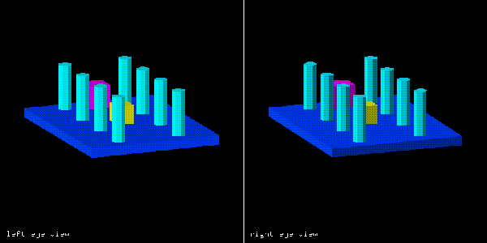

The time-parallel method displays both left and right views simultaneously, usually via a split screen or dual screen system. The viewer wears polarizing or red/green filtering glasses to ensure the appropriate view is seen by the correct eye. The best known example of a time-parallel display is a head mounted display (HMD), typically found in a Virtual Reality (VR) system.
The time-multiplexed method alternates the display of the left and right views on the same CRT. On a 30 Hz interlaced monitor, the left eye view is shown on the even scan lines while the right eye view is shown on the odd scan lines. On a 60 Hz non-interlaced monitor, both views are stored in two separate frame buffers and the screen is refreshed by alternating which frame buffer is used to update the screen. The update rate must be at least 120 Hz to eliminate flicker. Time-multiplexed displays are typically viewed using glasses which have built in shutters on each lens that effectively block one eye's view while the other eye can see the display. The shuttering of the glasses is synchronized with the display of a particular eye's view on the display. See the reference section for an example of this type of system.
The standard perspective projection (as shown in Figure 1) of a point P(x, y, z) onto a projection plane at z=0, with a center of projection (COP) at (0, 0, -d) is:
xp = (x * d) / (d + z) yp = (y * d) / (d + z)where (xp, yp) is the coordinate of the projected point.
If we move the COP such that there are now two COPs -- a left COP (LCOP) at (-e/2, 0, -d) and a right COP (RCOP) at (e/2, 0, -d), we can compute the projected points by:
xl = (x * d - z * e / 2) / (d + z) yl = (y * d) / (d + z) xr = (x * d + z * e / 2) / (d + z) yr = (y * d) / (d + z)where (xl, yl) is the projected left eye point, and (xr, yr) is the projected right eye point. This technique is known as off-axis projection, and is illustrated in Figure 2. Note that since yl and yr have the same equations, the off-axis projection is equivalent to horizontally shifting the point P for each view. Also note that the total field of view (FOV) (also see Figure 3) includes a region seen by both eyes, a region seen only by the left eye and a region seen only by the right eye.
As we noted above the perspective projection seems to involve a horizontal shift. We can use a single COP and reformulate the above equations to become:
xl = ((d * (x + e/2)) / (d + z)) - e/2 xr = ((d * (x - e/2)) / (d + z)) + e/2where yl and yr are the same as for off-axis projection. This technique is known as the on-axis projection. If we compare these equations to those for the standard perspective projection, we see that we can accomplish the left eye's on-axis projection by first translating the point P by e/2, perform the standard perspective projection, and then shifting the projected x value by -e/2. The right eye's view is similar. Alternatively we could apply the following algorithm (left eye):
for every point P(x,y,z) to be projected translate x to x+e/2 project P using standard pespective projection endfor pan entire image by -e/2The right eye view uses a translation of x to x-e/2 and a pan of +e/2. A detailed analysis of the FOV for the on-axis projection shows that it is approximately 40% that of the off-axis case. Despite the lower FOV, the on-axis technique offers a benefit on workstations which support translations and pans in hardware, since few workstations allow hardware control of multiple COPs. Thus the on-axis method often runs faster, than the off-axis method.
If we assume all our objects are convex, then the plane equation for each polygon has the form Ax + By + Cz + D = 0, where the normal vector is N = [A, B, C]. For each polygon, we can calculate Axv + Byv + Czv + D, where (xv, yv, zv) is one of the viewing positions. Thus any polygon plane that has Axv + Byv + Czv + D < 0, must be a back face.
We can note that there are four possibilities for each eye:
1) polygon is back face for both views 2) polygon is front face for both views 3) polygon is back face for right view and front face for left view 4) polygon is front face for right view and back face for left viewIf the back face removal process is a preprocessor for some other hidden surface removal algorithm, cases 3 and 4 won't contain many polygons.
Given convex objects, an algorithm for back removal is as follows:
for all polygons if A > 0 then if Axv + Byv + Czv + (D + Ae) < 0 then the polygon is a back face for both views endif else if Axv + Byv + Czv + D < 0 then the polygon is a back face for both views endif endif endforand given that (xv, yv, zv) is the viewing position of the right eye.
p = xr - xl p = e * (1 - (d / (d + z)))where xr and xl are calculated using the on-axis projection. If we solve for e and substitute z=i*d, we get:
e = p * (i + 1) / iwhere i*d is the maximum depth of our scene and i is given in units of d, the orthogonal distance to the view plane.
p = 2 * d * tan(B / 2)which we can substitute back into the equation for e:
e = 2 * d * tan(B / 2) * (i + 1) / i where e = distance between LCOP and RCOP d = orthogonal distance to projection plane B = maximum allowed HVA i = depth of scene in units of dIf we pick a HVA that is too large, most observers will find it difficult to merge the stereoscopic images, and if HVA is too small, the stereoscopic effect is lost. For time-multiplexed displays, that maximum HVA is affected by interocular cross talk and by image stimulus duration. Various studies have shown that we should limit HVA to be less than or equal to 1.5 degrees, which can be accomplished by setting e=0.028d.
Two types of image distortion can result due to using a fixed head position for calculating horizontal parallax in an interactive system. The first type of image distortion is scaling of the horizontal parallax caused by movement of the observer's head. The second type of image distortion is the shifting of the apparent location of the observed object caused by movement of the observer's head. Thus for time-multiplexed stereoscopic systems head motion should be restricted to minimize such effects.

StereoGraphics' Corporation Crystal Series Stereoscopic Viewing system.
{kind=link}